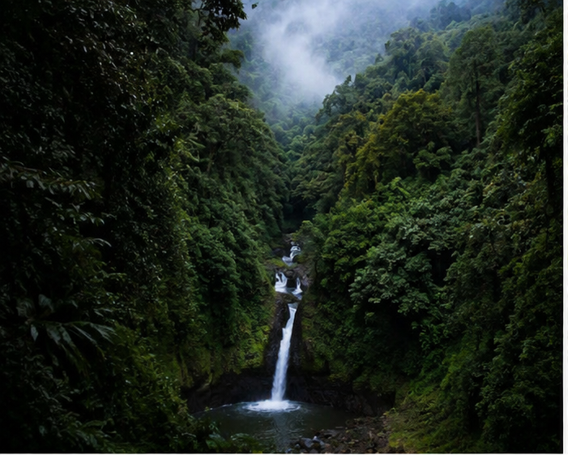
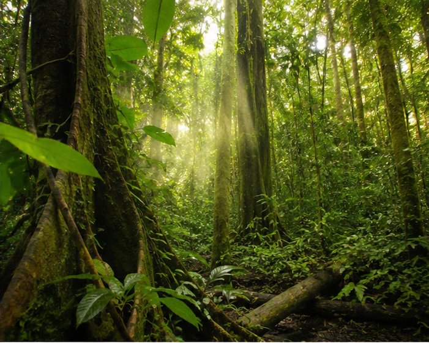
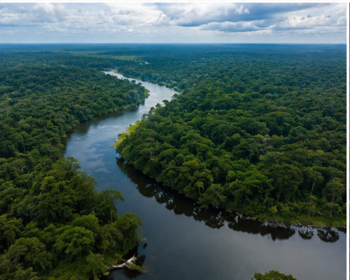
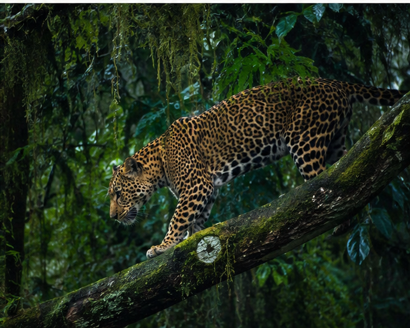

La naturaleza nos regala paisajes llenos de vida, color y tranquilidad. Cada árbol, flor y río refleja la belleza del mundo natural, invitándonos a cuidar y valorar el entorno que nos rodea.

En lo profundo de la selva, una hermosa cascada desciende entre rocas y vegetación exuberante. Sus aguas cristalinas crean un paisaje lleno de tranquilidad, belleza y vida natural.

La selva es un lugar lleno de vida, donde árboles gigantes, plantas exóticas y animales conviven en un entorno natural único y fascinante

El río fluye suavemente entre la naturaleza, llevando agua fresca y vida a su alrededor. Su corriente crea un paisaje tranquilo y hermoso que inspira paz y admiración.

El jaguar es uno de los animales más imponentes de la selva. Con su fuerza, agilidad y hermoso pelaje manchado, recorre el bosque como un símbolo de poder y majestuosidad.